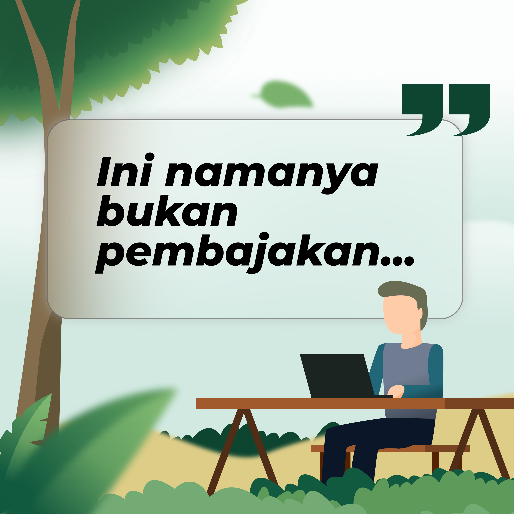
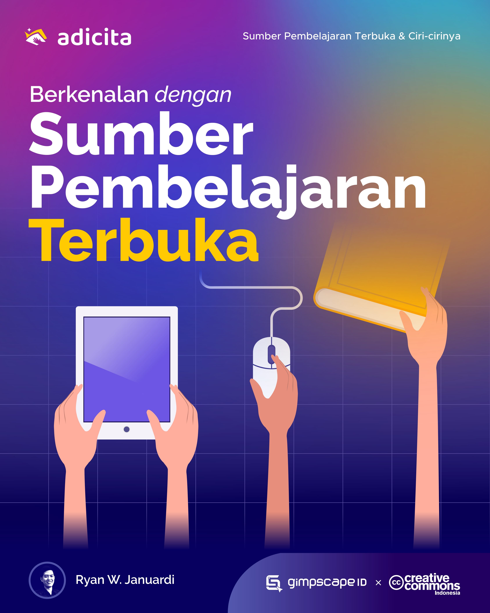
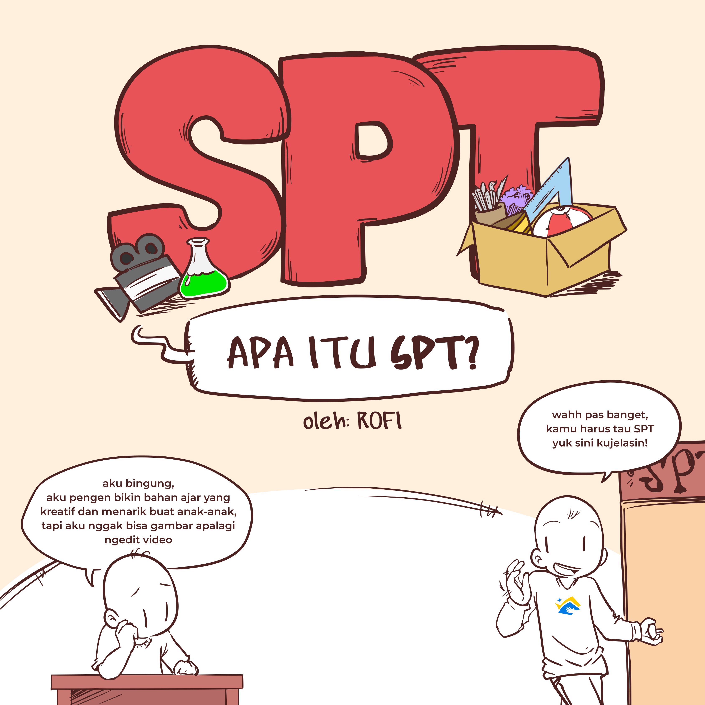
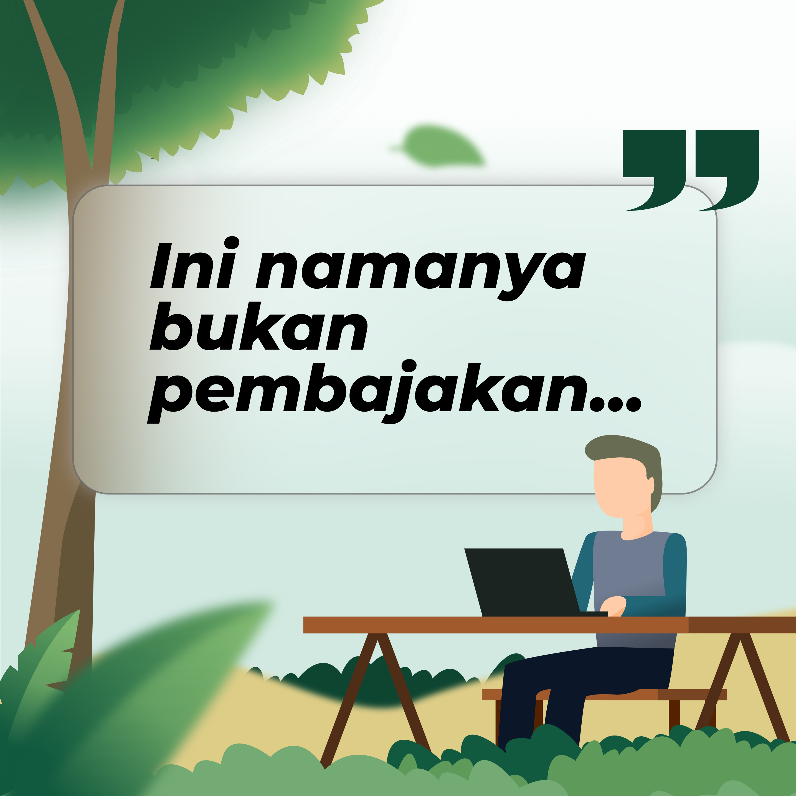
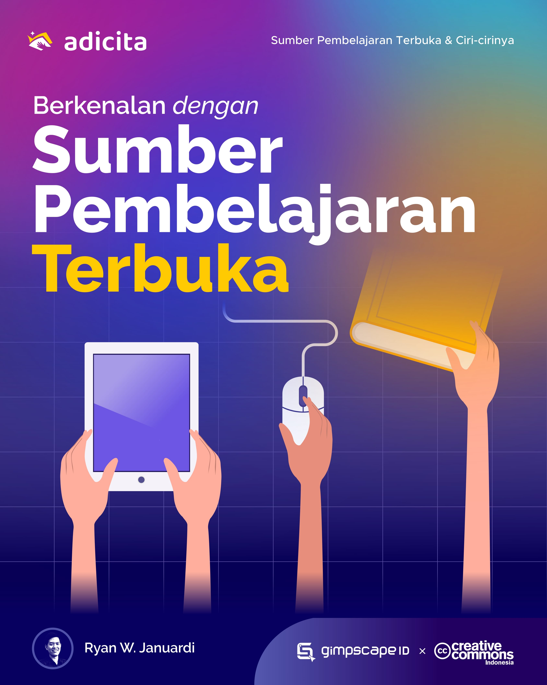
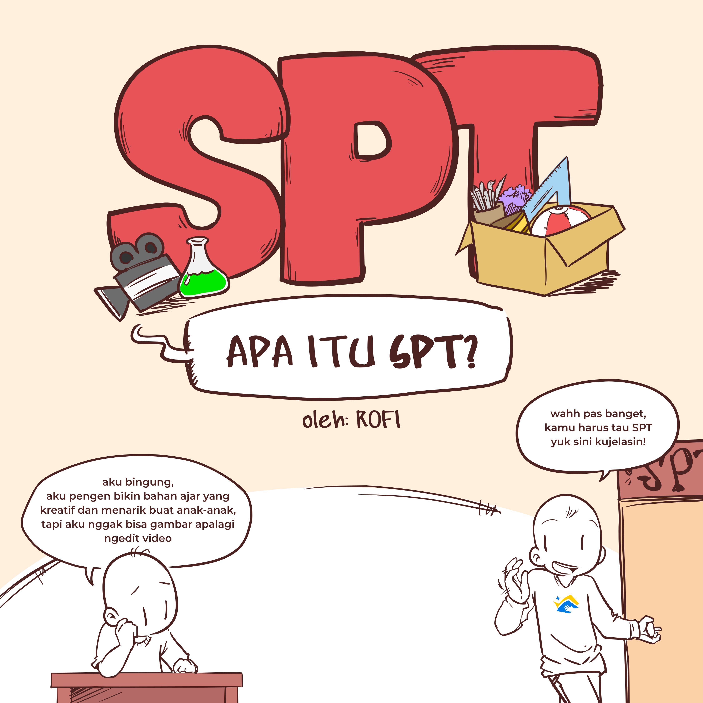

Pengumuman Pemenang Kontes Desain Infografik


Kontes Desain Infografik Adicita (KDIA) merupakan kegiatan kontes desain yang digelar oleh Komunitas Gimpscape ID bersama Creative Commons Indonesia (CCID). Kontes ini merupakan bagian dari rangkaian Proyek Adicita yang bertujuan untuk mengkampanyekan konten sumber pembelajaran terbuka (Open Educational Resource). Kegiatan ini juga sekaligus untuk merayakan ulang tahun ke-7 Komunitas Gimpscape ID pada bulan Februari ini.
Selama kontes berlangsung telah terkumpul 21 karya yang luar biasa, para peserta kontes tidak hanya mendesain tapi juga menghayati dan menarasikan kembali tema Sumber Pembelajaran Terbuka dengan ciri khasnya masing-masing. Sesuai dengan tujuan awal kontes ini, maka 21 karya cukup menjadi bahan baku untuk mengkampanyekan SPT di Indonesia, khususnya melalui media sosial. Karya-karya peserta dapat diakses pada tautan berikut ini.

Tanpa disadari, 16 peserta kontes turut serta membuat sumber pembelajaran terbuka mengingat seluruh karya yang terkumpul dilisensikan dengan lisensi CC dan juga harus kompatibel dengan lisensi CC BY-SA. Beberapa peserta bahkan mendapat revisi berkali-kali dari kami, namun mereka tetap semangat. Adapun hal itu kami lakukan agar dapat membuka peluang pengadaptasian dan pemanfaatan potensi dari karya secara penuh dari karya-karya yang teman-teman kirimkan.
Mengkampanyekan isu keterbukaan (Sumber Pembelajaran Terbuka) dengan memproduksi infografik dengan aplikasi/perangkat lunak bebas/sumber terbuka seperti Inkscape, GIMP, Krita atau sejenisnya membuat kontes ini berbeda dengan kontes lainnya, semangat keterbukaan atau berbaginya terasa dari proses pembuatan hingga hasil akhirnya.
Dari setiap kontes tentulah ada karya terbaik yang wajib diapresiasi, untuk itu pada hari ini kami mengumumkan pemenang. Tidak mudah untuk memberikan penilaian dari tiap-tiap karya yang luar biasa. Berdasarkan hasil penilaian dari kedua juri yakni Nugroho Dwi Hartawan dan Wahyu Setioko maka ditetapkan 5 nominasi peserta terbaik beserta judul karyanya yakni:
- Ibnu Hajar Asqolani.
- "Sumber Konten Berlisensi Creative Commons"
- Ahfie Rofi.
- "SPT-Apa itu SPT"
- Ryan Willmanda Januardi.
- "Berkenalan dengan Sumber Pembelajaran Terbuka"
- Moch Dwi Haryanto.
- "Sumber Pembelajaran Terbuka dan Ciri-cirinya"
- Dwi Afrizal.
- "Ini Namanya Bukan Pembajakan"
 






Dan akhirnya, dari kelima nominator di atas, Ryan Willmanda Januardi dengan karyanya berjudul “Berkenalan dengan Sumber Pembelajaran Terbuka” terpilih menjadi juara Kontes Desain Infografik Adicita.

Selamat pada pemenang dan terima kasih sebesar-besarnya kepada seluruh peserta yang telah turut serta mengkampanyekan sumber pembelajaran terbuka di Indonesia!